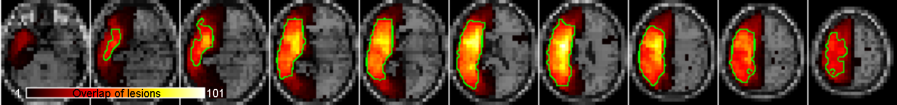
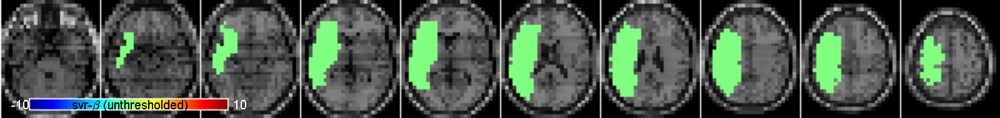
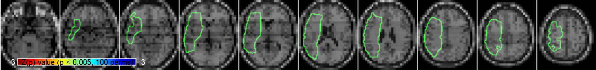
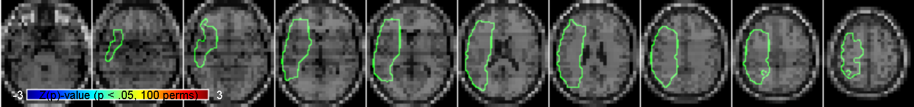
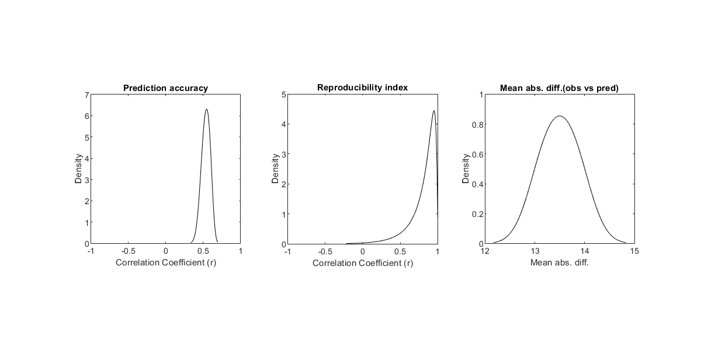
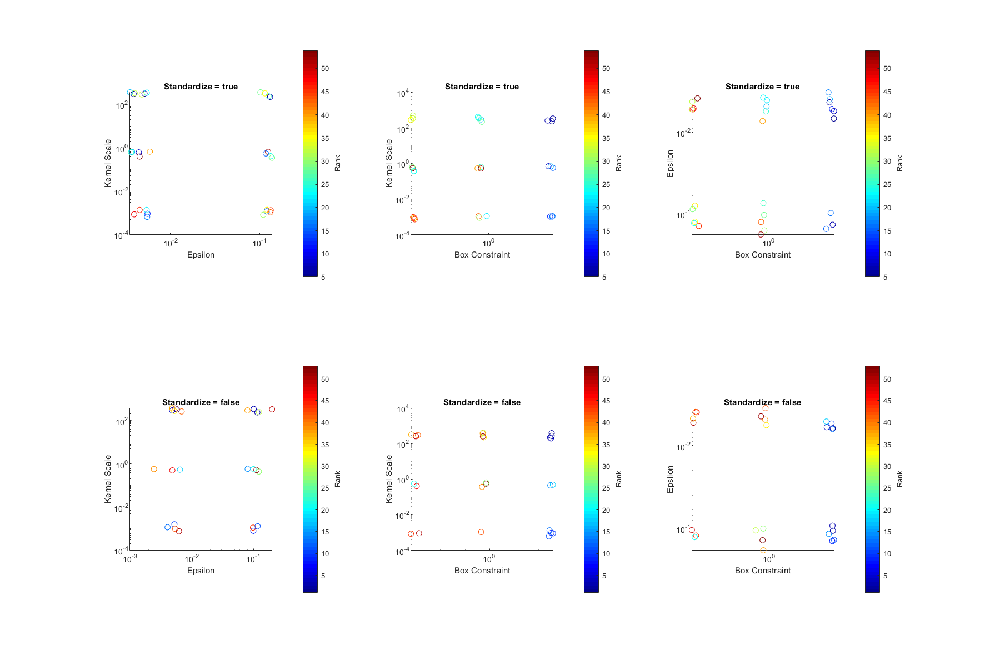
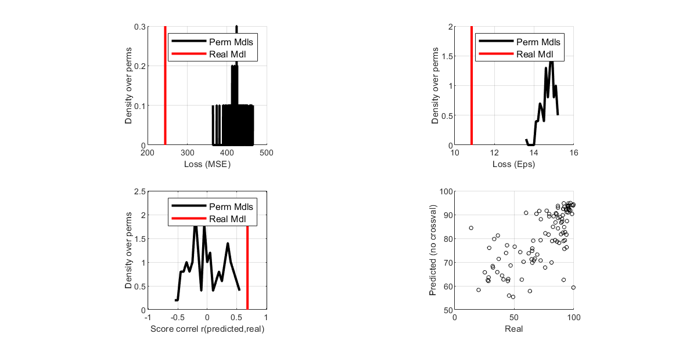

SVR-LSMgui (v2) Output Overview
Analysis summary
This analysis named 'myanalysis' tested the hypothesis (high scores are good) that there is a relationship between lesion status and the behavior score 'WABQuotient_TotalScore'. 101 subjects were listed for inclusion, and 25 were excluded due to missing behavioral data, lesion data, or for having no voxels inside the minimum lesion cutoff mask (NDW, AOE, AOV, CPK, CWK, DMD, FOL, FTE, FZI, JET, KUC, KZR, MHN, MTX, OXC, QKZ, RYF, SJL, SMB, SSE, TUR, UBA, YJS, KNK, RCQ). Each lesion volume was binarized prior to the analysis. Each lesion volume was resampled to 6 mm³ voxels prior to analysis. Data was not corrected for lesion volume. No other covariates were specified. The resulting SVR-β values were thresholded at p < .005 and corrected for cluster size at p < .05, both based on 100 permutations. The analysis was restricted to voxels with at least 20 overlapping lesions. The analysis was run on 08-Nov-2021 using MATLAB's SVR procedures (parallelized, run from the GUI), with parameters gamma = 5 and cost = 30. SVR-β maps were not generated using any cross-validation.Hyperparameter optimization was utilized. The method that was employed was Resub Loss (grid, 3 divs). The analysis completed in 0 minute and 50 seconds.
Lesion overlaps
Overlap of lesions in the patient sample (N = 101), a green outline indicates regions meeting the minimum lesion overlap criterion for the analysis (N = 20) totaling 1299 or approximately 32% of the 4070 voxels with any lesions present.
" width="100%" height="100%">
Unthresholded SVR-β map

Voxelwise thresholded Z(P) Values
Voxelwise thresholded Z(P) values, p < 0.005 based on 100 permutations.

Clusterwise thresholded P-map
0 clusters were significant at p < .05 based on 100 permutations.
Labeled significant clusters, p < 0.05 based on 100 permutations.

Behavioral nuisance model diagnostics
No behavioral nuisance model was included, so no diagnostics to display.
Cluster correction threshold stability
Although permutation testing was conducted, there were zero voxels that passed voxelwise thresolding, and thus no clusters of any size to plot.
Hyperparameter Quality Report
The final SVR model did converge. The model had parameters Cost/BoxConstraint = 300.00, Sigma/KernelScale = 300.00, Epsilon = 0.01, and Standardize = false. The final model utilized data points from 99 of the 101 observations (individual subjects) as support vectors. The final model had a bias of 68.89. Average prediction accuracy is 0.54 (SD = 0.05) and average reproducibility index is r = 0.86 (SD = 0.00). Average mean absolute difference between real and predicted behaviors is 13.50 (SD = 0.37).

Hyperparameter optimization information
Hyperparameter optimization was utilized to choose parameters values for Cost/BoxConstraint (range 0.001 - 300.00), Sigma (range 0.001 - 300.00), Epsilon (range 0.005 - 3.00), and standardize (range true/false). Optimization was conducted using a Grid Search search strategy with 3 grid divisions and Resubstitution Loss as the objective function. A 5-fold cross-validation scheme was used during hyperparameter optimization in which the folds were repartitioned at each iteration. The best point observed during hyperparameter optimization evaluated the objective function to 5.74 which corresponded to parameter values of Cost/BoxConstraint = 300.00, Sigma = 300.00, Epsilon = 0.01, and Standardize = false.

Behavioral predictions
Two types of model losses are calculated for the real data model, including mean square error and epsilon-insensitive loss. For MSE loss, the real model achieves a value of 244.22, which ranks 1/100 relative to the randomly permuted models. For Eps loss, the real model achieves a value of 10.86, which ranks 1/100 relative to the randomly permuted models. Predicted scores correlate with the real scores at r = 0.684, p = 0, which ranks 1/100 relative to the randomly permuted models. The figures below show the plots related to the model predictions, including two model loss metrics, and the correlation between the predicted data and real data. If permutation testing has been conducted, then model loss metrics and correlatedness are ranked for the real model results relative to randomly permuted models.
